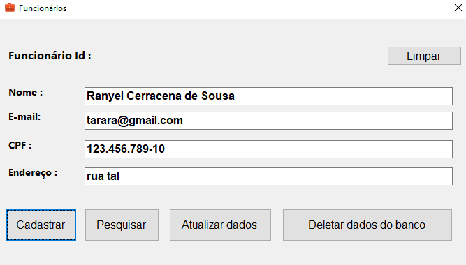
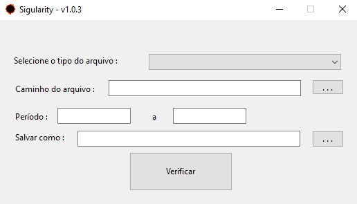
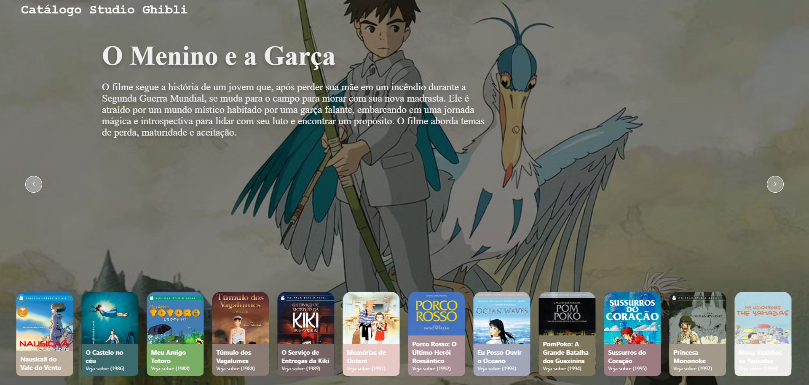

"Cada linha de código que escrevo é um reflexo das emoções e
pensamentos que moldam quem sou. Minhas criações transcendem a lógica,
são ecos da minha alma."
Meus Projetos

CRUD - Cadastro de Funcionários

Singularity

Catalogo de filmes Studio Ghibli
Detalhes
Uma aplicação crud com Windows Forms utilizando C#, onde
adiquiri mais conhecimento referente a linguagem de programação,
e pude aplicar os novos conhecimentos adiquiridos. Esse projeto
é um crud simples de cadastro de funcionários, entretanto, pude
aprender e colocar em prática conhecimentos adiquiridos sobre
banco de dados relacional, onde utilizei o MySql juntamente do
MySql Workbench. Foi uma aplicação simples, mas que me ajudou a
entender melhor as práticas, lógicas e a linguagem de
programação
Detalhes
Meu terceiro projeto na carreira da programação, onde pude
aplicar o que aprendi no primeiro projeto com meu supervisor. O
Singularity é também uma ferramenta contábil, onde usava um
componente nuGet chamado closedXML, o programa lia arquivos txt
onde continha informações do Pis e Cofins da empresa. E no fim,
gerava uma planilha em Excel que continha os dados das empresas,
razão social e cnpj, as informações dos periodos selecionado nas
colunas, e por fim se existia movimentação ou não, caso não,
escrevia um comentário informando quais os produtos que não
tinham movimentação. Vale resaltar que foram os primeiros
programas que fiz, os códigos são muito confusos, e por isso
tenho interesse em refazer esse programa trazendo um código mais
limpo e para fácil manutenção, esse programa foi utilizado,
entretanto não foi mais utilizado.
Detalhes
Projeto onde pude implementar meus conhecimentos no
desenvolvimento web front-end, além de que foi um projeto que
também me trouxe muitos conhecimentos, incluindo o uso de append
e preppend no javascript, podendo assim, implementar botões de
next (próximo) e back (voltar), podendo utilizar de animações de
ir e voltar. Um dos projetos onde pude dedicar mais tempo e um
dos que mais gostei do resultado final do front-end. Além de foi
um projeto onde pude aperfeiçoar meus arquivos README.md, como
claramente podem notar.
Habilidades
Sobre mim
Meu nome é Ranyel Cerracena de Sousa, também conhecido como Race,
e sou desenvolvedor Full-Stack e aspirante a desenvolvedor .NET.
Minha jornada começou no início de 2023 com desenvolvimento web
front-end, onde explorei HTML, CSS e JavaScript e mergulhei no
universo da tecnologia por meio de estudos autodidatas. Foi nesse
processo que percebi que a programação e a lógica por trás de cada
código eram exatamente o que eu queria para minha vida. Com essa
motivação, iniciei a graduação em Engenharia de Software e,
durante minha trajetória, tive a sorte de conhecer pessoas
incríveis que contribuíram imensamente para meu crescimento
pessoal e profissional. Ao explorar mais a fundo, me deparei com a
linguagem C# e a plataforma .NET, o que me levou ao meu primeiro
projeto desktop usando Windows Forms. Essa experiência despertou
meu interesse pelo desenvolvimento back-end, especialmente com C#,
e desde então, venho estudando a fundo tudo o que a plataforma
.NET tem a oferecer. Hoje, um dos meus objetivos é conquistar o
reconhecimento Microsoft MVP, contribuindo para a comunidade .NET
e ajudando outras pessoas que estão começando sua carreira no
mundo da tecnologia e programação. Mais uma vez, meu nome é Ranyel
Cerracena, ou Race, e esta é uma pequena demonstração de quem sou.